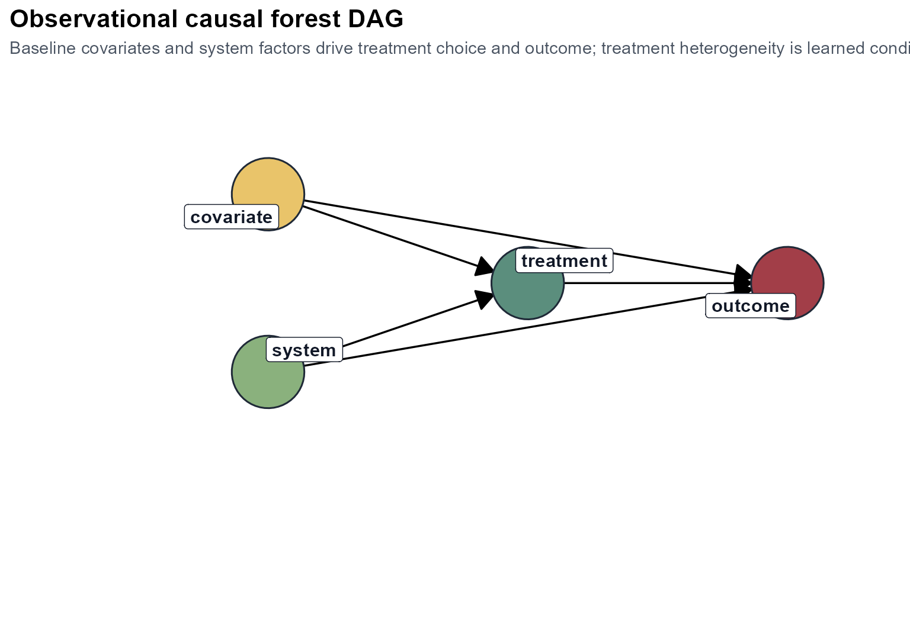
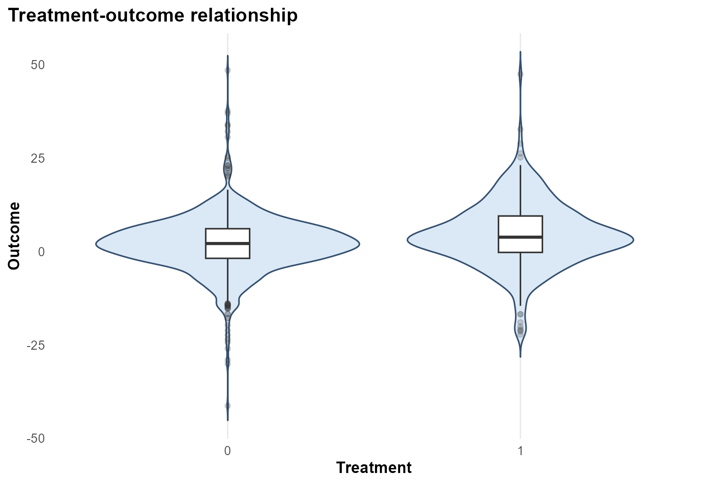
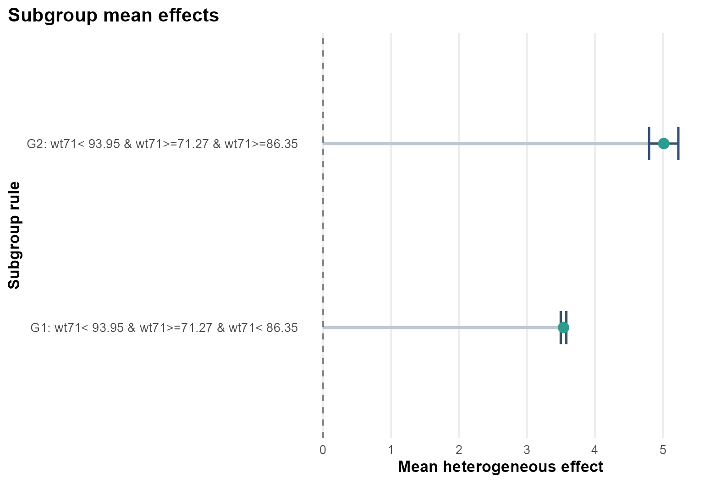
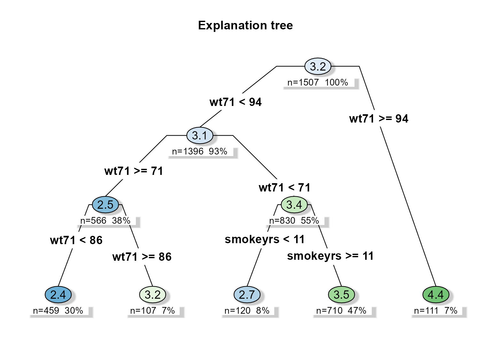
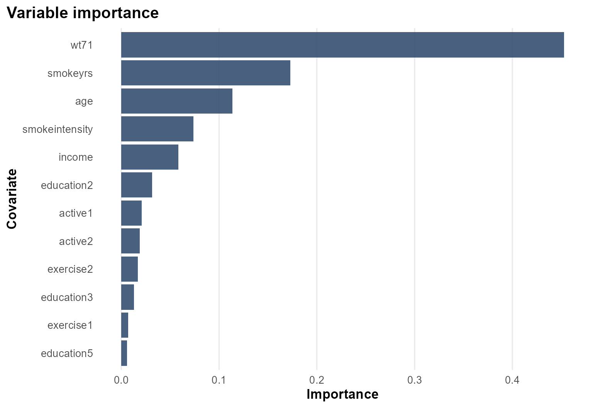

Background
causaldata::nhefs_complete is one of the standard
epidemiologic datasets used to study the consequences of smoking
cessation. In this tutorial the outcome is weight change, the treatment
is quitting smoking, and the covariates summarize baseline smoking
behavior and demographic background.
Objective
The goal is not only to estimate an average effect of quitting smoking on later weight change, but to identify whether the effect is systematically larger in some baseline strata than in others.
Formally, the target is:
where is weight change, is smoking cessation, and contains baseline characteristics.
Analysis setup
dat <- prepare_case_nhefs()
fit <- fit_observational_forest(
data = dat,
outcome = "outcome",
treatment = "treatment",
covariates = setdiff(names(dat), c("sample_id", "outcome", "treatment")),
sample_id = "sample_id",
seed = 123,
num_trees = 400,
tree_minbucket = 100
)
fit$check_table
#> check_name value status
#> 1 rows_used 1507.0000000 info
#> 2 rows_dropped_missing 0.0000000 ok
#> 3 outcome_sd 7.8462543 ok
#> 4 treatment_sd 0.4340153 ok
#> 5 treatment_rate 0.2514930 info
#> 6 covariate_count 20.0000000 info
fit$subgroup_table
#> subgroup rule n effect_mean effect_low
#> 1 G1 wt71< 93.95 & wt71>=71.27 & wt71< 86.35 710 3.537389 3.496328
#> 2 G2 wt71< 93.95 & wt71>=71.27 & wt71>=86.35 111 5.011400 4.796818
#> effect_high
#> 1 3.578451
#> 2 5.225983Design view

The causal story is observational: baseline smoking intensity, prior weight, and related health behaviors may influence both the decision to quit and later weight change. The analysis therefore relies on adjustment through the baseline covariates supplied to the forest.
Treatment and outcome pattern

This figure is descriptive rather than causal. It shows how outcome values are distributed across treatment groups before the forest has adjusted for the full covariate set.
Heterogeneous effect summary

The subgroup summary indicates that estimated effects are not constant. In this analysis, the dominant split is baseline weight, with heavier participants showing larger predicted weight gain after smoking cessation.
Explanation tree
plot_effect_tree(fit)
The explanation tree is a compact approximation of the forest’s sample-level effect predictions. It does not replace the forest; instead, it provides a readable subgrouping rule for reporting.
Variable importance

The importance profile helps explain why the subgroup tree is organized around baseline weight and smoking history variables.
Interpretation
This case study produces a coherent epidemiologic story:
- baseline weight is the strongest modifier,
- smoking history features also contribute,
- quitting smoking is associated with larger predicted weight gain in heavier baseline subgroups.
The package output is therefore useful not only for estimation, but also for describing where the treatment effect appears concentrated.
Limitations
This remains an observational design. The results depend on:
- the adequacy of baseline adjustment,
- the absence of important unmeasured confounding,
- the stability of the subgroup rules across resampling and alternative covariate specifications.
The subgroup rules should therefore be treated as structured heterogeneity summaries, not as automatically transportable decision rules.